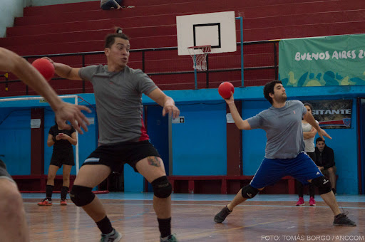
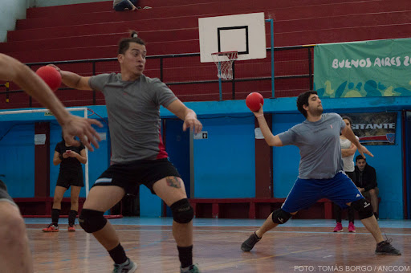

La Asociacion de Dodgeball Argentina es el organismo encargado de regir, impulsar y potenciar la
actividad en todo el territorio Argentino. Nacido en el año 2015 con origen en la Ciudad Autonoma de
Buenos Aires, a lo largo de los años Dodgeball Argentina logro expandirse a lo largo y ancho del pais.

La Asociacion de Dodgeball Argentina es el organismo encargado de regir, impulsar y potenciar la
actividad en todo el territorio Argentino. Nacido en el año 2015 con origen en la Ciudad Autonoma de
Buenos Aires, a lo largo de los años Dodgeball Argentina logro expandirse a lo largo y ancho del pais.
Haciendo foco en la inclusion desarrolla el deporte de forma mixta y sin limite maximo de edad, creemos
en hacer del deporte una comunidad es por eso que ya se dictaron multiples clinicas y capacitaciones en
diferentes centros educativos, barrios de emergencia y centros deportivos.
Con mucho esfuerzo y el apoyo recibido logramos ser la primera seleccion latinoamericana en participar
en un mundial de Dodgeball, como asi tambien ser reconocidos como asociacion directiva y ejemplo a
seguir de Latinoamerican Dodgeball, organismo que regula la actividad en toda latinoamerica.
Valores
A
Honestidad
B
Inclusion
C
Compromiso
PRESIDENTE
Diego Gaston Bertola
VICEPRESIDENTE
Norberto Osvaldo Tavella